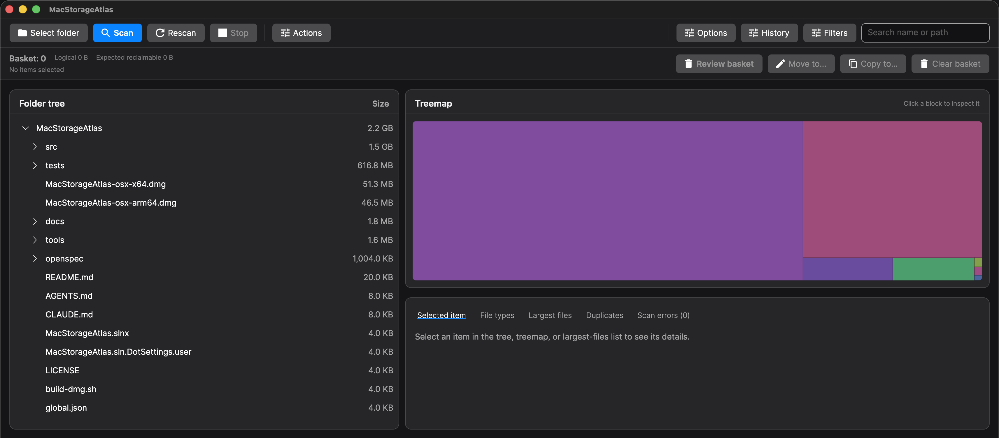
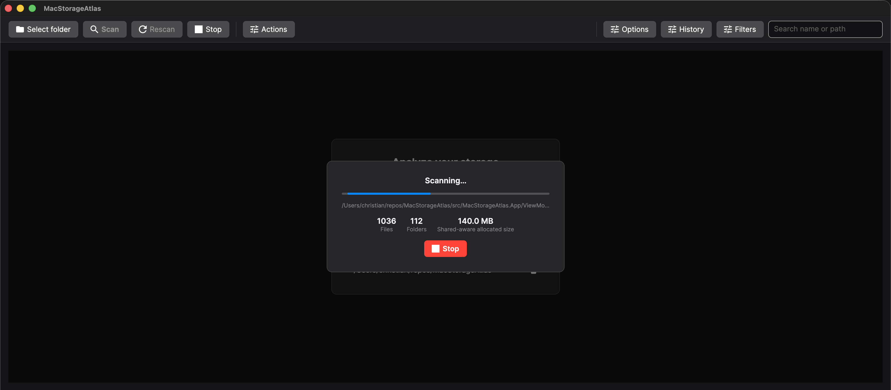
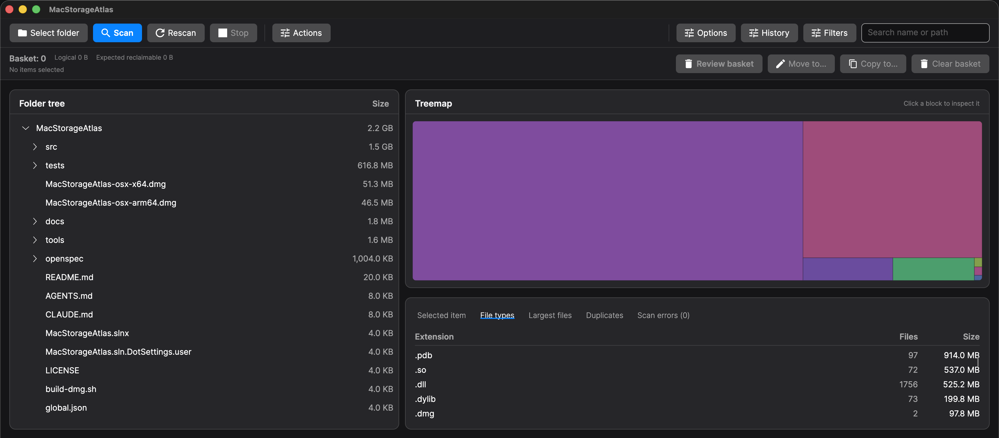
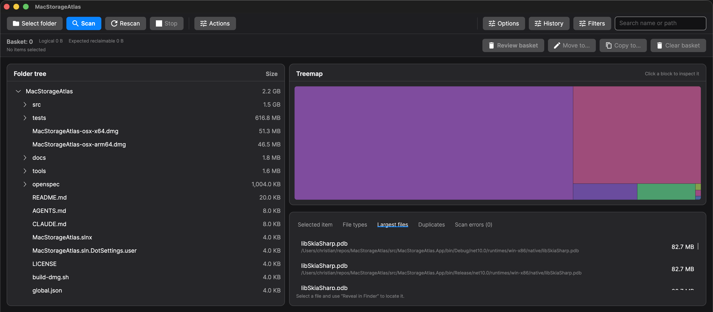

MacStorageAtlas is a native disk usage analyzer for macOS — a free WinDirStat, DaisyDisk, and GrandPerspective alternative for Apple Silicon and Intel Macs. Wondering what is using my disk space on Mac? Scan any folder or volume and see the results as a sortable folder tree and an interactive treemap, so you can find the space hogs and free up gigabytes in seconds.

Features
🗺️ Tree + treemap
Two synchronized views: a folder tree sorted by size and a proportional treemap where the biggest blocks are the biggest consumers.
⚡ Live progress
Async scanning streams paths, file/folder counts, and bytes as it runs. Hundreds of thousands of files stay responsive — cancel anytime.
📊 By file type & largest files
Dedicated tabs for which file types take the most room and the single biggest files on disk, with counts and full paths.
🧹 Safe cleanup
Reveal any item in Finder or move it to the Trash after a confirmation — nothing is permanently deleted by accident.
☁️ Cloud-aware on-disk size
Measures the space files actually occupy, so undownloaded iCloud/OneDrive/kDrive placeholders count as roughly zero.
⚙️ Configurable scanning
Toggle hidden files, symbolic links, and .app bundle expansion. Preferences and recent locations are remembered.
How it compares
| MacStorageAtlas | DaisyDisk | GrandPerspective | WinDirStat | |
|---|---|---|---|---|
| Platform | macOS (arm64 + x64) | macOS | macOS | Windows |
| Price | Free & open source | Paid | Free | Free |
| Treemap view | ✅ | ✅ | ✅ | ✅ |
| Folder tree | ✅ | — | — | ✅ |
| File-type breakdown | ✅ | — | — | ✅ |
| Real on-disk size (cloud-aware) | ✅ | — | — | — |
Live progress on huge volumes
Scanning is fully async and streams the current path, file and folder counts, and bytes scanned as it runs — hundreds of thousands of files stay responsive, and a single click cancels while partial results stay visible.

Answer the two questions that matter
The same scan, two tabs: which kinds of files take up the most room? and what are the single biggest files on disk? — each with counts, sizes, and full paths.


/Applications → Open, or run
xattr -dr com.apple.quarantine /Applications/MacStorageAtlas.app.
Only do this for builds you trust.